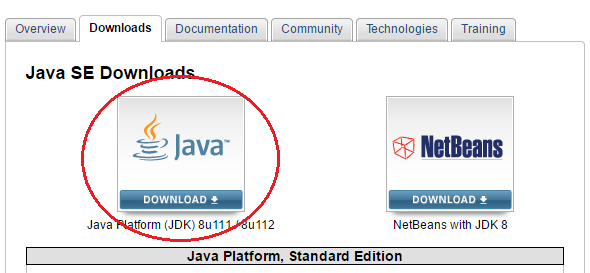
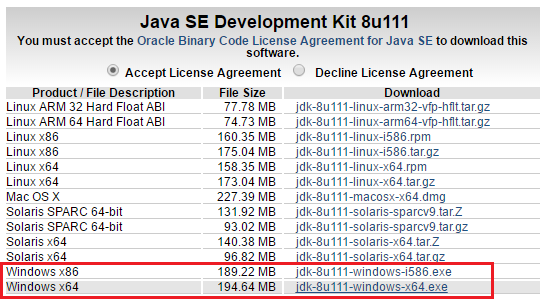
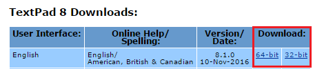
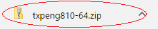

In order to compile and run your programs, you will need to download the Java SDK and an IDE or text editor to edit your code with.
1. You will want to download the latest version of Java (if it's not already installed on your system) start by following the Java JDK hyperlink.
Java JDK
2. Select Java JDK downloads

3. Accept the license agreement and then choose the Java version that corresponds to your operating system.
4. Once the download is complete, click on the installer and follow the on screen instructions to complete the install.
5. Reboot your computer.
Next you will download TextPad. Follow the TextPad hyperlink.

6. Once textpad is downloaded open the file and run the installer.

7. Reboot your compter to complete all installs.
Congrats, your Java programming environment is all set up.